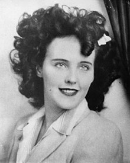
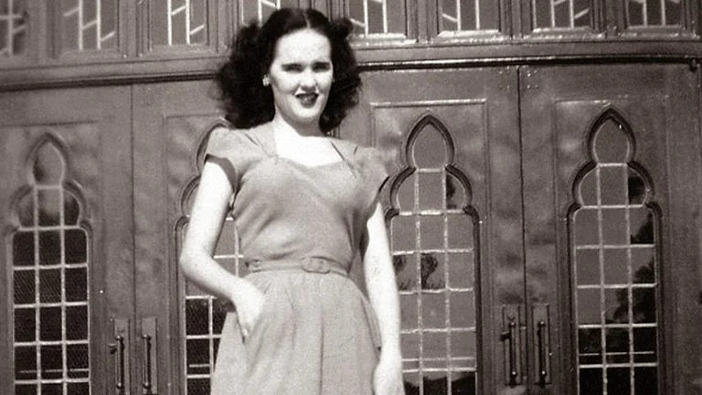
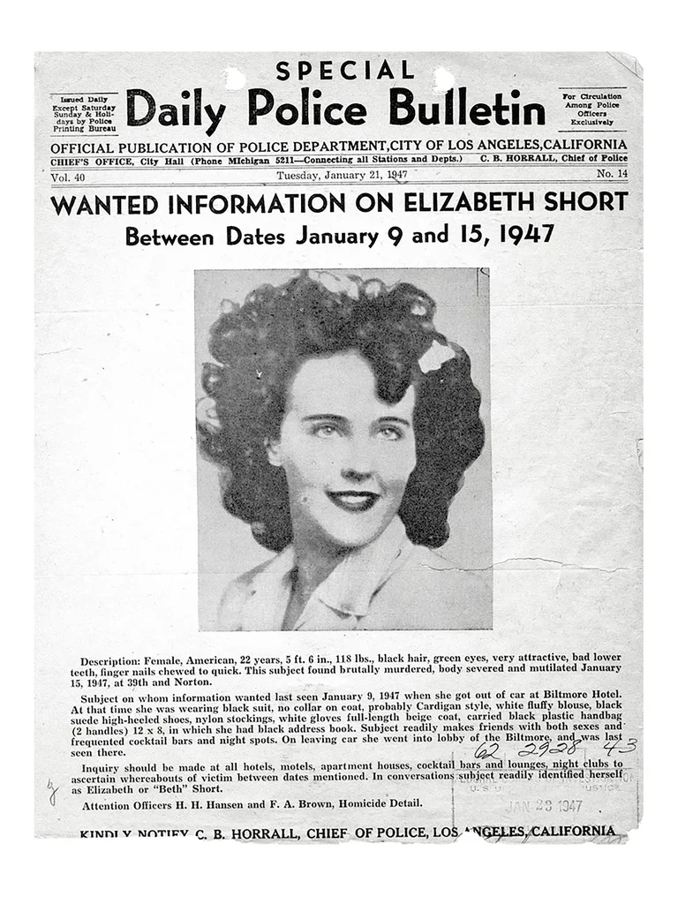
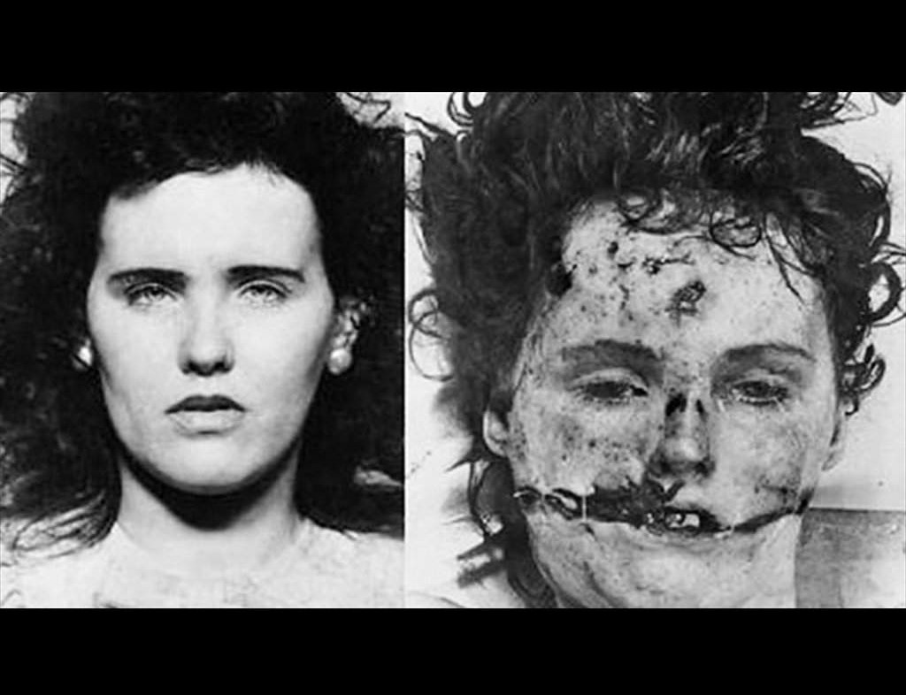

Biografía
Elizabeth Short nació en Hyde Park, Boston, Massachusetts. Fue educada en Medford por su madre, Phoebe Mae Sawyer, después de que su padre, Cleo Short, las abandonara a ella y a sus cuatro hermanas, en octubre de 1930, simulando un suicidio al dejar su carro en un puente.
Aquejada de asma, Elizabeth pasó sus veranos en Medford y sus inviernos en Florida en casa de amigos de su madre. A la edad de diecinueve años fue a Vallejo, California, a vivir con su padre, que volvió a ponerse en contacto con ellas. Su esposa no le perdonó y le indicó que no quería volver a saber de él, pero Elizabeth decidió aprovechar la oportunidad para estar más cerca de Hollywood, para así convertirse en una famosa actriz, su gran sueño. Los dos se trasladaron a Los Ángeles a principios de 1943, pero su padre quería poco menos que una criada que le hiciera la comida y le limpiara la casa y su hija tenía muy claro que no quería una vida convencional.
Después de una intensa discusión ella se fue, consiguiendo un puesto de trabajo en un intercambio en el Campamento Cooke (actual Base Vandenberg de la Fuerza Aérea), cerca de Lompoc. Se trasladó a Santa Bárbara, donde fue detenida el 23 de septiembre de 1943, por beber siendo menor de edad, y fue devuelta a Medford por las autoridades juveniles. En los tres años siguientes residió en distintas ciudades de Florida, con ocasionales viajes de regreso a Massachusetts para visitar a su madre. Obtenía dinero, la mayoría de las veces, trabajando como camarera.
En Florida conoció a Matthew M. Gordon Jr., quien era parte de la 2.ª Comandancia Aérea y de capacitación para el despliegue en el CBI (China-Birmania-India). Short le dijo a algunos amigos que Gordon le había escrito una carta desde la India proponiéndole matrimonio, mientras se recuperaba de un accidente aéreo que había sufrido cuando trataba de rescatar a un piloto derribado. Ella aceptó su propuesta, pero Gordon Jr. murió poco tiempo después en un accidente, el 10 de agosto de 1945, antes de que pudiera regresar a los Estados Unidos. Más tarde se llegaría a decir que ellos se casaron y tuvieron un hijo que murió, ignorando que la autopsia reveló que ella nunca había estado embarazada ni había dado a luz. Aunque los amigos de Gordon confirmaron que existió una relación entre él y Short, después del asesinato la familia del prometido negaría cualquier relación entre ambos.


Acontecimientos
El 15 de enero de 1947 en Leimert Park, Los Ángeles, California, una citadina de la zona encontró el cuerpo sin vida de Elizabeth Short, mujer bostoniana que durante sus años de gloria había estado intentando ingresar al mundo de la actuación sobreviviendo en una ciudad tan lánguida y movida como Los Ángeles. Short, apodada por la prensa como «la Dalia Negra», presentó al mundo la brutalidad de la humanidad por medio de su cuerpo, masacrado, mutilado y dañado, el cual dejó muy poco a la imaginación respecto de la depravación de la que una persona puede ser capaz de cometer.
Siendo culpable únicamente de poseer una belleza singular, la brutalidad de su asesinato constituyó un evento icónico en la historia estadounidense, siendo reconocido internacionalmente no solo por la perturbación misma del acto, sino por ser un caso que 70 años después del incidente, aún no ha sido resuelto.
El 10 de enero, un día antes de la desaparición de Short, Robert Red tuvo una cita con ella. La encontró caminando sola por la calle y decidió invitarla a salir gracias a su asombroso atractivo. El hombre, comerciante de 25 años, llevó a Elizabeth en su carro hasta un motel para tener relaciones con ella, pero ésta no lo permitió ofreciendo excusas sobre su estado de ánimo, decidiendo así dormir para pasar la noche. A la mañana siguiente, Short mintió diciendo que debía ir a la terminal de autobuses a dejar una maleta, y luego llegar a su hotel para reencontrarse con su hermana menor. De esta manera, Red acompañó a Short a la estación, y alrededor de las 4 de la tarde dejó a la mujer en el umbral de su hotel para no volver a verla jamás.
La recepcionista de turno de aquel día contó haber visto a la mujer salir del hotel durante la noche. A las diez de la noche del 11 de enero de 1947, Elizabeth Short salió del Hotel Cecil y desapareció misteriosamente.

No fue encontrada sino hasta tres días después, el 15 de enero, cuando Betty Bersigner caminaba junto a su hija por Leimert Park el cual era un pastizal en el que parecía iban a haber construcciones. Mientras Betty caminaba por el sendero, su hija de tan solo cinco años observaba la zona y llamó la atención de su madre al mostrarle un maniquí tirado junto a la grava que parecía partido a la mitad. Se acercaron para observar el artefacto con atención, pero la calma desapareció cuando Betty notó que se trataba del cadáver descuartizado de la desaparecida Elizabeth Short. La mujer gritó como nunca en su vida, y tomó a su hija para salir corriendo del lugar cuanto antes y posteriormente llamar a la policía.
El caso fue todo un reto para el cuerpo policial cuando la investigación comenzó. El cuerpo de Short se encontraba dividido a la mitad desde la zona de la cintura con un corte quirúrgico minucioso y perfecto, su cuerpo había sido drenado completamente, por lo que no esclarecía allí ni usa sola gota de sangre; había sido golpeada múltiples veces y amordazada en las extremidades; sus órganos e intestinos habían sido retirados de su cuerpo, y parte de su muslo había sido utilizado para violarla; sin embargo, a pesar de todas estas calamidades, que sin duda afectaban la sensibilidad del espectador, el aspecto más aterrador de su cadáver residía en su rostro, en el cual se formaba la reconocida "Sonrisa de Glasgow", un corte horizontal en el rostro que partía de su oreja hacía el otro extremo recorriendo sus labios.
Respecto de su aspecto físico, a pesar de los golpes en todo el cuerpo, el cadáver se encontraba aseado y lavado por completo, las uñas aseadas y arregladas, sin rastros de sangre o suciedad, su cabello había perdido su tonalidad negra, mostrándose de un tono rojizo oscuro; la disposición del cuerpo era antinatural, siendo que sus brazos, puestos hacia arriba formaban ángulos rectos con los codos, mientras su rostro girado hacia la derecha se mantenía de perfil.

Llevado el cuerpo al proceso de autopsia, el equipo forense encontró distintos tipos de tortura, como quemaduras de cigarrillos, desgarramiento de la piel y golpes que parecían haber sido efectuados con un bate para fracturar sus extremidades. Se determinó que la causa de la muerte fue por shock cerebral debido a las contusiones de la cabeza y la perdida exagerada de sangre. Hubo afirmaciones que expresaban que la mujer de tan solo 22 años, fue torturada durante 72 horas.
El caso que se volvió tendencia en la ciudad llevó a que los medios de comunicación decidieran hacer parte del hito producido por la expectativa de las personas, sobresaturando y entorpeciendo la investigación. Apodaron a la difunta como «la Dalia Negra», nombre precedido por el estreno de la película de «la Dalia Azul», largometraje sobre el asesinato de una mujer, cambiando el color debido a la distinción de Elizabeth al vestir de negro para lucir elegante y llamar la atención.